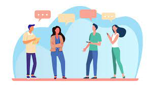
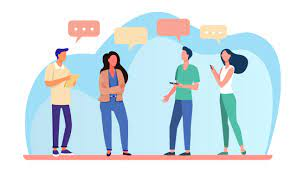

About Me!
My name is Leah Song, and I'm a 7th grader in CI. My hobby is to play some winter sports, such ice hockey and ski, travel, listening to music, singing, and dancing.
Digital Citzenship
A digital citizen is a person using information technology in order to engage in society, politics, and government.
Communication üó£
1. What is positive online communication? In what ways can we make positive online communication?
I think positive communication is socializing with people by interacting them online, and build relationships with different people. However, you have to prevent yourself from being safe online, and not communicating with every single people who talks to you in the internet. Some ways we can make positive online communication are being brief. It should be simple, and reliable enough to tell about yourself briefly online because if you introduce yourself too specifically and tell about your personal or private information, then it will lead to be a trouble and cause problems like cyber threats. According to research, the first step to effective online communication is being able to discern the differences between personal and professional communication. Determining this will allow us to make important decisions such as which app or digital tool to use, where to set up your call, and how we share information.

Metaverseüíø

Metaverseüíø
2. What evaluation methods are used to find accurate information online?
We need to identify which sources or information are credible or not because you might get tricked by some fake information and sometimes, it might be dangerous for some websites that makes you to login with your account and type your password in. Then, the hacker or anonymous person online might access your account information and hack your account. Therefore, it is really important to know which sites you have to access online or not.
Counterfeit realityüì±
Counterfeit realityüì±
3. To what extent, digital deception or cyber threats are happening online? What is my solution to survive from counterfeit reality?
Some cyber threats that are happening online are password attacks, fishing, private data without permission, such as photos, account credentials, and more. Some solutions to avoid cyber threats are limiting personal information you share online, using complicated password, which includes upper and lowercase letters, think before you click the source, and do not provide personal information, use secure internet communications, and more. I think it is really important to solve these problems to survive from counterfeit reality because people should beware of the internet information, images, and other things that are going around online, since there are a lot of digital deception or cyber threats occurring online. If people just trust and access any information, and talk to anyone, then this is an example of negative online communication, which can cause people to get their account hacked, and some people might attack them by cyber threatening and spreading their photos to different areas in the internet, and your face might get revealed, which is a dangerous situation because everyone in the public will know how you look like. To prevent from this, another solution is to cover your faces when taking pictures. For example, you can show your back, sides, but not your whole front faces. Instead, you can take a photo of your face, and cover your face with something else to be safe from having these cyber attacks.

Technologyüíª
Technologyüíª
4. Would AI take our technologies in the future? Will this be a good affect, or bad affect?
It is important to know if AI would take over the humanity in the future with some kind of artificial intelligence. I think this can cause a good effect on humanity because AI might save our lives in the future from artificial intelligence and the support from smart infrastructure to help us efficiently with different natural resources or agriculture, or solve our global challenges. Not only that, AI can help our daily lives, using their intelligence, like calculations, predictions, mark accuracies, analyze huge amounts of data, and more. These will help keep us from getting faster databases and getting more knowledge from AI of what humans can’t do.
5. What are some technical skills that everyone should be aware these days?
Some technical skills that everyone should be aware these days are preventing our accounts from safety, making complicated passwords, social media management, database management, IT security, and more to keep my account as private as possible. It is important to know this because we need to know the basic technical skills that we should be aware when looking for different websites, in order to prevent our accounts from being safe. We all should be knowing how we to determine the comparison between credible, and incredible sources, which can be the basis of digital citizenship. We also need to make sure to be aware of communicating online, and able to identify the people who are safe, or not safe online. If we don’t know these basis before we do anything online, again, you can get into cyber threatening, bullying. Not only this, but you can also get your accounts hacked, or getting your private and personal information revealed or spread in the internet.